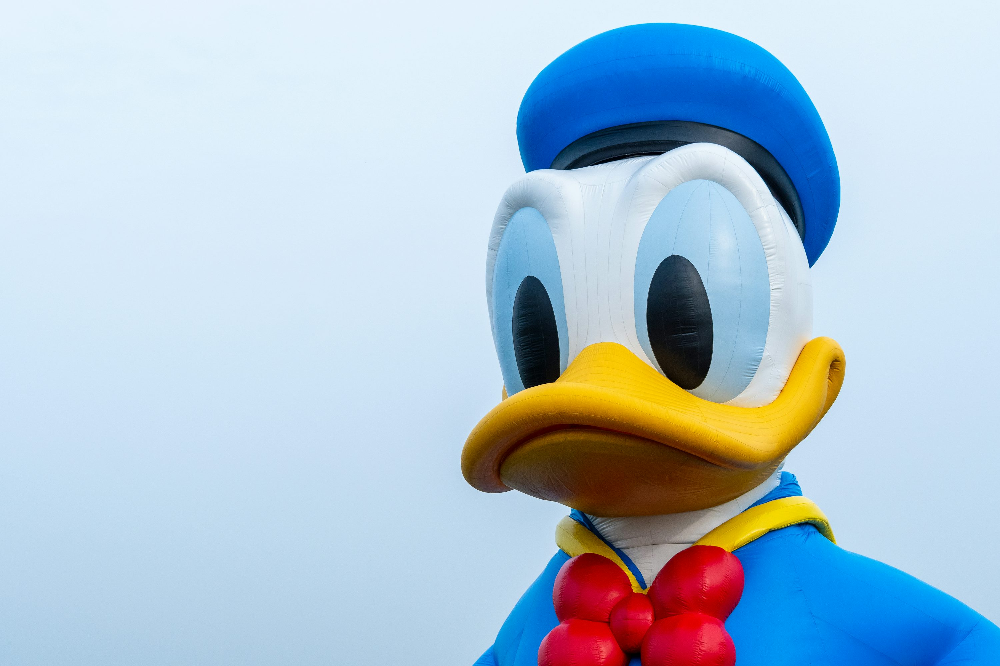

Source: Washington Post
Author: Real McPerson
Date Published: 8/16/2025

That’s right, you didn’t miss read the headline, Disney’s well known mascot has become the first fictional character ever elected as president of the USA. People may be wondering why and Disney’s PR team is here with an answer. In a recent interview when asked why they had Donald Duck run for presidency they said, “Well it all started as just a publicity stunt. I mean, who would expect citizens to actually vote for a cartoon. But it soon became apparent that in these rough times people are just looking for escape, they want to escape back to childhood.” You may also be wondering how Donald Duck is supposed to lead us, seeing as he is not real, Disney has a solution for that too. “Using the Disney’s new AI character models, Donald Duck can live as an AI being, making logical and data driven decisions”.